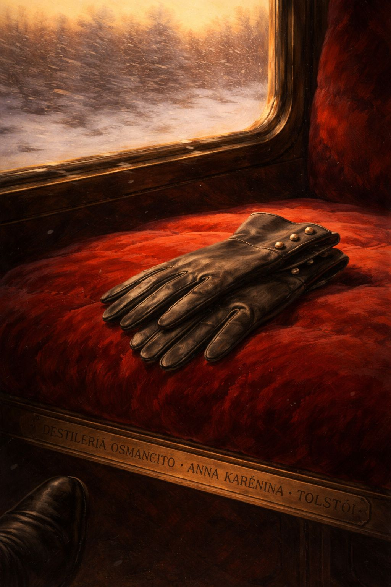
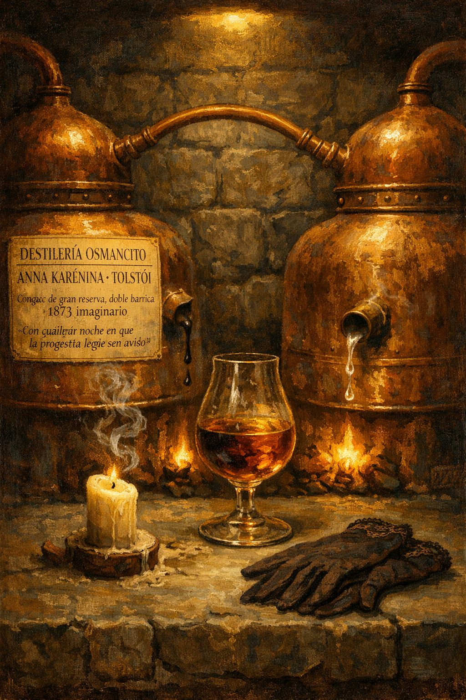
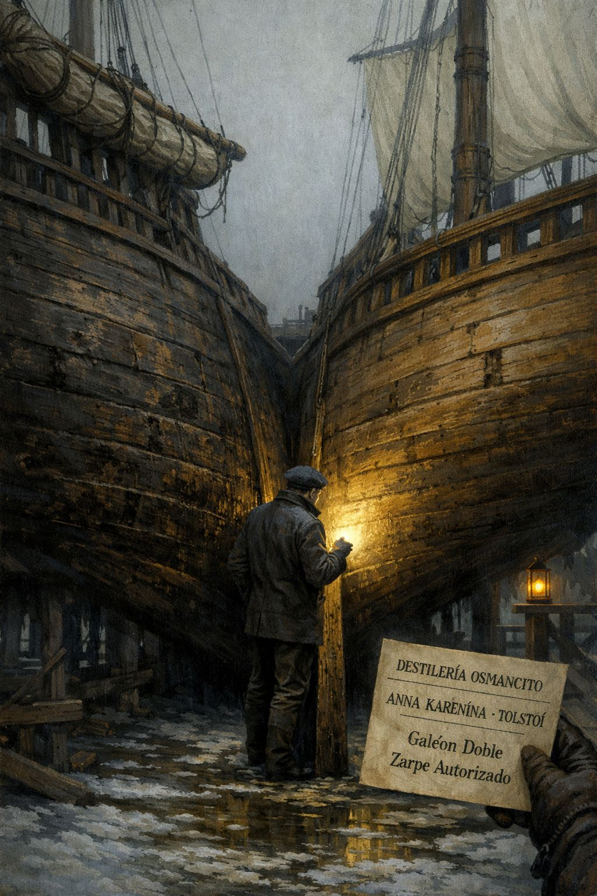
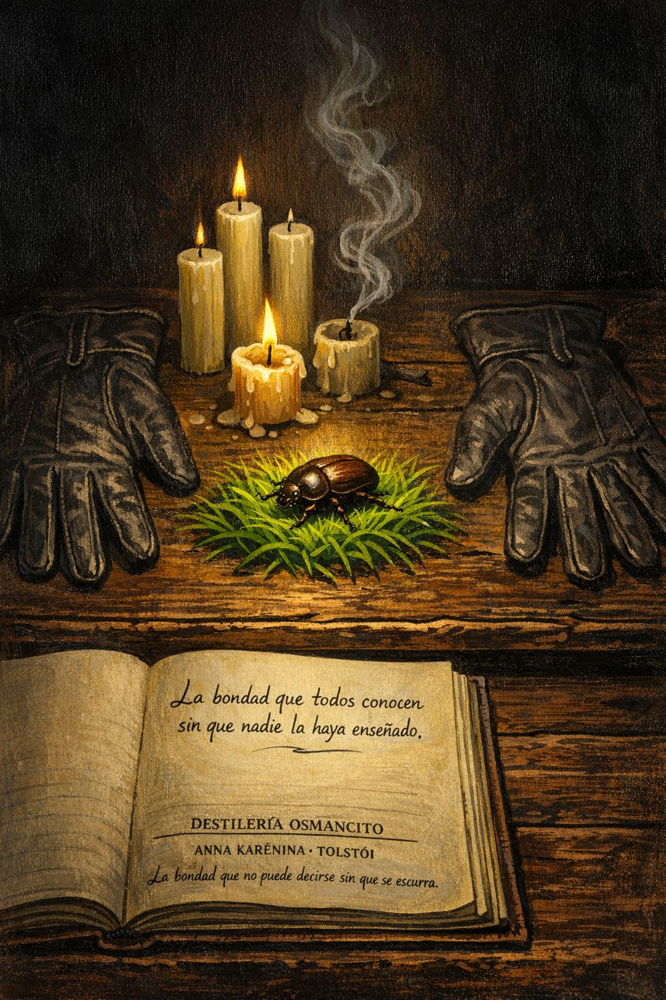
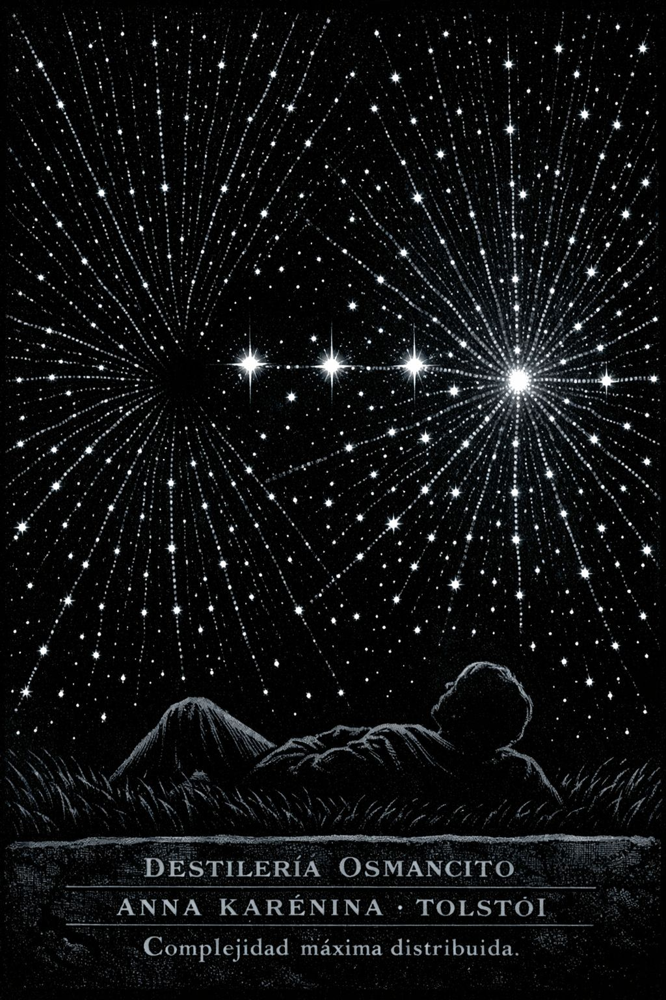

Libro cerrado sobre superficie de mármol gris, ligeramente veteado, como el de una estación de tren en invierno. La cubierta es tela negra con letras doradas en bajo relieve: ANNA KARENINA en posición dominante / debajo, en cuerpo menor: TOLSTÓI / y en la parte inferior, como colofón tipográfico: DESTILERÍA OSMANCITO · ANÁLISIS COMPLETO · LOTE 006. El libro descansa sobre el mármol junto a dos objetos: un guante de mujer de cabritilla oscura, a medio quitar, y un billete de tren doblado cuya escritura es ilegible. La cubierta tiene una ilustración central sobria y terrible: un óvalo con una vela encendida vista de frente — la llama perfectamente vertical, sin inclinarse, como si el viento hubiera dejado de soplar un instante antes del accidente. La paleta es negra, oro envejecido, gris mármol y el rojo mínimo de la llama. Materialidad: tela buchram negra con esquinas reforzadas, aspecto de edición crítica académica de alta factura. La luz de trabajo cae oblicua desde la izquierda, iluminando el relieve del título y dejando el resto en penumbra digna.
Registro de Entrada
Fase 0 — Recepción de materia prima
Materia prima recibida. Iniciando registro.
Registrando datos de entrada…
Recepción completa. El Alambique puede operar.
Registro de Entrada
TítuloAnna Karénina
AutorLev Nikoláievich Tolstói
Año de primera publicación1877 (serializada 1875–1877)
Traductora del corpusConstance Garnett
Idioma originalRuso
GéneroNovela realista
Extensión del corpus~349.964 palabras · 8 partes · 239 capítulos
Concentración de destilación12.5× — compresión severa, resultado noble
Palabra más frecuenteLevin (1.497 ocurrencias). La novela lleva el nombre de Anna pero su obsesión léxica es Levin. El libro declara una cosa y trabaja otra. Esa asimetría es la falla raíz de todo lo demás.
FuenteProject Gutenberg, HTML — Modo 1, Archivo adjunto
Lote006
Sinopsis y Figuras Clave
Una mujer de la alta sociedad petersburguesa abandona a su marido y a su hijo por un amor que al principio parece liberación y termina siendo una jaula más pequeña que la anterior. En paralelo, un terrateniente moscovita busca durante ocho partes la respuesta a por qué vale la pena vivir, y la encuentra en un momento tan ordinario que casi no se puede contar. Los dos arcos corren juntos sin tocarse, como dos trenes en vías paralelas que no colisionarán pero cuya proximidad produce en el lector una vibración constante. La novela no resuelve su propia pregunta central —si el amor pasional destruye o redime— porque Tolstói no puede resolverla sin traicionarla.
Anna Karénina — La protagonista nominal. Mujer de inteligencia excepcional y magnetismo involuntario, destruida no por el amor sino por la imposibilidad de existir fuera del juicio social.
Konstantín Dmítrievich Levin — El alter ego del autor. Terrateniente, pensador torpe, buscador sincero. El protagonista real del libro aunque no figure en el título.
Alexéi Kirílovich Vronsky — Oficial de caballería de la Guardia Imperial. Ama a Anna con honestidad limitada por su propia incapacidad de renunciar al mundo que ella ha abandonado.
Alexéi Alexándrovich Karenin — El marido. Funcionario de Estado de alta eficiencia y baja temperatura emocional. El villano más compasivo de la literatura rusa.
Ekaterina "Kitty" Shtcherbatskaya — Cuñada de Levin. El arco de su salvación invierte y comenta el de Anna.
Stepan "Stiva" Arkádievich Oblonsky — Cuñado de Anna. El hombre que vive sin conciencia moral y prospera. La ironía más cruel del libro es que él sobrevive a todo.
Nikolái Levin — Hermano enfermo de Levin. Su muerte es el momento más honesto de la novela.
Materias Primas Dominantes
¿Puede el ser humano vivir fuera del juicio de los otros sin convertir ese juicio en la medida de todo lo demás? El corpus trabaja este eje de forma sistemática: Anna cree huir del juicio social y termina juzgando a Vronsky con la misma severidad con que la sociedad la juzgó a ella. El mecanismo no cambia con la libertad; cambia de objeto.
¿Qué convierte al trabajo y al amor cotidiano en fuente de sentido y qué los vacía? Levin siega con sus campesinos, labra, engendra, duda — y en cada una de esas acciones Tolstói prueba que la cuestión no es qué se hace sino desde dónde se hace. La misma actividad puede ser dignificante o mecánica según el grado de presencia del que la ejecuta.
¿Es posible el perdón genuino o toda absolución humana es una forma disfrazada de poder? Karenin perdona a Anna en el delirio del parto y ese perdón es el punto más alto del libro moralmente — y el más insostenible. El corpus no puede sostenerlo. El perdón dura exactamente lo que tarda el sufrimiento en remitir.
Imagen de Recepción

Un andén vacío de estación, San Petersburgo, plena madrugada de invierno — pero no la madrugada antes del amanecer sino la de después de medianoche, la hora en que ya no queda nadie. Los rieles brillan bajo la nieve que cae oblicua y sin prisa, con la indiferencia de lo que lleva siglos haciendo lo mismo. No hay tren. No hay figura. Solo los postes de luz que proyectan círculos amarillos sobre los raíles, y entre un poste y el siguiente, oscuridad perfecta. En el suelo, casi cubierto de nieve, un guante de mujer — uno solo, el izquierdo, de cabritilla oscura — que nadie recogió. La composición está equilibrada hacia el vacío de la derecha: lo que debería estar ahí no está. El ojo del espectador busca y no encuentra. Paleta: negro de carbón, blanco de nieve sucia, amarillo de gas, gris de acero frío. En la esquina inferior derecha, sobre la nieve que cubre el borde del andén: DESTILERÍA OSMANCITO · ANNA KARENINA · TOLSTÓI.
Módulo Alambique — Destilación
Fase 1 — Destilado maestro, barricas, cartografía y nota de cata
Materia prima en el alambique. Comenzando destilación.
Destilando barrica por barrica…
Componiendo el destilado maestro…
Eligiendo la bebida para la nota de cata…
Destilado Maestro
Todas las familias felices son iguales. Las desdichadas lo son cada una a su manera. Esa distinción suena a taxonomía pero es una trampa: el libro que sigue no está interesado en la felicidad. Está interesado en el momento exacto en que una persona descubre que la vida que tiene no es la que puede soportar, y en lo que hace con ese descubrimiento.
Una mujer llega a Moscú a reconciliar a un matrimonio roto y en el camino rompe el suyo propio. No por accidente: porque algo en ella exige ser visto, y hay un hombre en el andén que la ve. El problema no es el amor. El problema es que ese amor opera en un mundo donde el amor de ese tipo no tiene lugar — y el mundo, cuando no tiene lugar para algo, no lo destruye directamente: lo deja vivir en condiciones que terminan destruyéndolo solas.
En paralelo, un hombre que no figura en el título busca durante ochocientas páginas la respuesta a una sola pregunta: para qué. Siega con sus campesinos y siente algo que no puede nombrar. Propone matrimonio y lo rechazan. Propone de nuevo y lo aceptan. Tiene un hijo y siente terror en lugar de alegría. Mira el cielo en la última página y algo se asienta en él sin que cambie nada exterior.
Estos dos arcos no colisionan. Se rozan. La novela que lleva el nombre de la mujer es, en número de palabras y en densidad de pensamiento, la novela del hombre. Tolstói no puede decidir qué libro está escribiendo porque en realidad está escribiendo dos preguntas que no tienen la misma respuesta: ¿puede el amor pasional ser una forma de vida? ¿Puede el trabajo ordinario ser una forma de trascendencia? La respuesta a la primera es no. La respuesta a la segunda es sí, con condiciones. Y el libro contiene ambas sin resolver la contradicción entre ellas.
Lo que hace a Anna inmortal no es su adulterio sino su inteligencia: es la persona más lúcida del libro y esa lucidez es lo que la mata, no la locomotora. Sabe lo que está pasando, sabe hacia dónde va, sabe que el camino que ha elegido no tiene salida — y continúa, porque retroceder implicaría admitir que el tipo de amor del que es capaz no tiene cabida en ninguna forma de vida disponible para una mujer de su tiempo. La muerte no es rendición. Es la conclusión lógica de un silogismo que Tolstói instaló en el primer capítulo y no pudo o no quiso interrumpir.
Karenin, el marido frío, es el personaje más trágico. No porque sufra más — sufre menos que Anna — sino porque en el instante de mayor grandeza moral que le concede el libro (el perdón en el delirio del parto), el libro mismo no sabe qué hacer con él. Tolstói necesita que Karenin sea el obstáculo y no puede mantenerlo como el hombre generoso que fue por exactamente un capítulo.
Levin siega. Levin duda. Levin mira las estrellas. Levin tiene razón — o al menos Tolstói piensa que la tiene — pero esa razón está construida sobre una experiencia que no está disponible para Anna: la de un hombre con tierras, tiempo y la libertad de buscar.
La novela es justa con todos sus personajes y no es justa con ninguno. Esa tensión — la justicia imposible del arte frente a la brutalidad de la estructura — es exactamente lo que la hace inagotable.
Barricas
Parte I — El mundo antes de la grieta
34 capítulos. La maquinaria social en funcionamiento. Todo funciona mal pero funciona.
Parte I · Capítulo 1
La primera ley
El universo de la novela se inaugura con una tesis que parece observación pero es una amenaza.
Todas las familias felices son iguales. Cada familia desdichada lo es a su manera. Esta frase no es el comienzo de una novela sobre la desdicha familiar. Es el comienzo de una novela sobre por qué la desdicha produce carácter y la felicidad, en el lenguaje de Tolstói, es solo la ausencia de historia. La casa de los Oblonsky está en confusión porque el príncipe tuvo una aventura con la institutriz francesa. En tres días, el cocinero se fue, la gobernanta amenaza con irse, los niños corren sin control. Una infidelidad ordinaria ha producido entropía total. Tolstói lo cuenta con una serenidad clínica que es la primera forma de ironía del libro.
La fórmula que nadie debería olvidar
Todas las familias felices son iguales. Cada familia desdichada lo es a su manera. Esta frase no es el comienzo de una novela sobre la desdicha familiar: es la declaración de que solo la desdicha tiene forma propia, solo la desdicha es distinguible, solo la desdicha merece ser narrada. La felicidad es genérica. La desdicha es la única que tiene nombre.
El hombre que no puede estar triste
Stiva Oblonsky despierta en el diván de su estudio y por un instante, entre el sueño y la vigilia, está feliz. Entonces recuerda. El contraste entre la felicidad involuntaria del despertar y la realidad que regresa es la forma más exacta que tiene Tolstói de mostrar que la conciencia moral de Stiva es funcional pero superficial: está ahí, funciona cuando se le recuerda, y en cuanto puede, se olvida.
Parte I · Capítulo 2
La maquinaria del luto fingido
Dolly y Stiva intentan hablar. No lo logran.
Dolly llora. Stiva intenta que sus ojos brillen con la tristeza apropiada y no lo consigue: le brillan con la alegría de estar vivo. Ese destello involuntario es peor que cualquier palabra descortés. Dolly no lo perdona porque Stiva no puede fingir lo que no siente, y lo que no siente es que haber traicionado a su mujer sea una catástrofe. Lo que siente, con toda honestidad, es que es un inconveniente.
Lo que no se puede pedir
Dolly llora. Stiva intenta que sus ojos brillen con la tristeza apropiada y no lo consigue: le brillan con la alegría de estar vivo. Ese destello involuntario es peor que cualquier palabra descortés. La distancia entre la desdicha de ella como catástrofe y la desdicha de él como inconveniente es el espacio donde vive toda la crueldad de este capítulo.
Parte I · Capítulo 3
El trabajo como fuga
La oficina de Stiva. El mundo funciona a pesar de los hombres que lo administran.
Stepan Arkádievich llega a su oficina, donde los secretarios lo saludan con el afecto genuino que solo se tiene por los superiores que no hacen sufrir. Firma papeles. Aprueba peticiones. El trabajo fluye con una facilidad que el lector siente casi obscena considerando el estado de su casa. Los asuntos del Estado no dependen de la vida interior de los hombres que los gestionan. El mundo funciona igual si el funcionario es feliz o está destrozado.
El secreto de la burocracia
El Estado no necesita hombres íntegros: necesita hombres funcionales. Stiva, con su matrimonio en ruinas y su conciencia a medio encender, administra los asuntos públicos con una competencia que ninguna crisis privada puede interrumpir. Esa independencia del engranaje respecto al engranaje humano es el hallazgo más frío del capítulo.
Parte I · Capítulos 4–9
Levin llega, propone, es rechazado
El primer arco completo del libro en seis capítulos. Torpeza, amor y la primera derrota.
Levin llega a Moscú con la urgencia interna de un hombre que ha decidido algo grande y la torpeza externa de quien nunca ha aprendido a parecer natural cuando algo le importa mucho. Ve a Kitty en el estanque de patinaje y sabe lo que ya sabía. Propone. Kitty dice que no — con delicadeza, casi gentileza, porque en ese momento cree en Vronsky. Levin recibe la negativa con la integridad del que prefiere el dolor claro a la esperanza ambigua, y se va.
El hombre que no sabe fingir
Levin se mueve en la vida social como un oso que sabe que hay agua en algún lado pero no dónde exactamente. Su torpeza no es un defecto simple: viene de tomarse en serio cosas que el mundo ha acordado tomar a la ligera. Esa seriedad es lo que lo hace torpe y lo que lo hará, al final, encontrar lo que busca.
Lo que se sabe antes de poder decirlo
Kitty patina. Levin la mira. Hay exactamente un párrafo entre ese mirar y el reconocimiento de que la decisión ya está tomada, que en realidad llevaba tiempo tomada, y que el viaje a Moscú fue la consecuencia, no la causa. El enamoramiento no es el inicio de un proceso sino el reconocimiento tardío de uno que ya ocurrió.
El error bien intencionado
La princesa Shcherbatskaya ha decidido, con la mejor voluntad del mundo, que su hija debería casarse con Vronsky. Tiene razón en todos sus hechos. Tiene razón en la persona equivocada.
Parte I · Capítulo 17
La llegada de Anna
Anna entra al texto sin anuncio dramático. Tolstói no la presenta: la pone en movimiento.
Anna llega a Moscú sin preparación narrativa. Entra al andén de la estación con la energía de alguien que tiene un propósito concreto — arreglar el matrimonio de Stiva — y el magnetismo involuntario de quien no sabe que lo tiene. Tolstói introduce a su protagonista nominal solo en el decimoséptimo capítulo, y eso solo. No la describe: la percibe. La descripción fija; la percepción crea expectativa.
El personaje que interrumpe la escena
Anna aparece en el capítulo diecisiete, no en el primero. Esa demora no es descuido: es la decisión de un narrador que sabe que el magnetismo no se describe. Se instala. Y cuando Anna entra al andén de la estación de Moscú, la novela ya lleva suficiente tiempo preparando el espacio que ella va a ocupar.
Parte I · Capítulo 18
La primera mirada
En la estación, Vronsky ve a Anna. Anna ve a Vronsky. Un hombre muere aplastado por el tren.
Vronsky está en el andén esperando a su madre. Anna sale del vagón. En ese cruce de miradas — que dura lo que tarda un tren en pasar — algo ocurre que ninguno de los dos puede nombrar todavía. La supresión voluntaria de la luz en los ojos de Anna, el brillo que vuelve a pesar de esa supresión, la sonrisa que no se decide a serlo. No es amor a primera vista. Es el reconocimiento de algo que ya estaba ahí esperando la ocasión.
Lo que ocurre antes de que ocurra algo
En ese cruce de miradas en el andén, hay en Anna algo peculiarmente caricioso y suave, y su naturaleza parece tan desbordante que se muestra contra su voluntad, ahora en el brillo de sus ojos, ahora en su sonrisa. Deliberadamente ella apaga esa luz, pero aparece de nuevo a su pesar. No es amor a primera vista: es el reconocimiento de algo que ya estaba ahí esperando la ocasión.
La muerte que abre el libro
En el andén, un guardavías muere aplastado por el tren. Anna dice que es un mal presagio. Nadie la toma en serio. El lector debería: Tolstói pone la muerte de Anna al principio, en forma de presagio que la misma Anna nombra y que todos desestiman. El destino anunciado que los personajes no pueden no cumplir, no porque estén ciegos sino porque ver el destino y seguir hacia él es la condición misma de ser quien son.
Parte I · Capítulos 22–28
El baile y el desastre de Kitty
Una noche destruye la certeza de dieciséis años. La crueldad involuntaria como forma más precisa del daño.
Kitty llega al baile convencida de que Vronsky la amará. En el transcurso de una noche, Vronsky baila con Anna, mira a Anna, existe para Anna con una intensidad que Kitty reconoce sin poder nombrar. El baile termina. Kitty entiende. No con palabras: con la comprensión física de quien ve que algo que creía suyo nunca lo fue. Y luego cae enferma, con la precisión de alguien cuyo cuerpo materializa lo que su mente no puede procesar.
La crueldad involuntaria
Lo que hace insoportable este episodio no es que Vronsky prefiera a Anna — eso es comprensible, casi inevitable — sino que Kitty no estaba equivocada sobre él. Vronsky la miraba con interés genuino. El problema es que ese interés no era del tipo que resiste la aparición de algo más intenso. Kitty no fue abandonada por una ilusión. Fue abandonada por una persona real que eligió otra cosa.
El cuerpo que sabe lo que la mente no quiere saber
Kitty enferma después del baile con la precisión de alguien cuyo cuerpo ha decidido materializar lo que su mente todavía no puede procesar. Los médicos la examinan. Los médicos no entienden. El padre de Kitty entiende perfectamente — sabe que el diagnóstico es la humillación no metabolizada — pero no hay lenguaje médico para eso. Es la primera aparición de un tema que recorrerá toda la novela: el cuerpo como receptor de lo que el mundo social no permite expresar.
Parte II — La grieta se hace fisura
35 capítulos. El amor adulterino se desarrolla. La sociedad lo nota. Todo sigue funcionando excepto las personas dentro del sistema.
Parte II · Capítulos 6–7
Karenin nota algo. Karenin habla.
La ceguera voluntaria y el marido que habla en lugar de sentir.
Karenin nota la atención que Vronsky presta a su esposa en una velada social. Lo nota con la precisión analítica de quien aplica su inteligencia a todo excepto a las cosas que podrían hacerle daño. Karenin no es ciego por falta de inteligencia. Es ciego por exceso de control. Luego le dice a Anna que su comportamiento produce comentarios. Se lo dice con la precisión de un abogado y el distanciamiento de un funcionario. El problema de Karenin no es lo que dice: es que no puede decirlo de otra manera.
La ceguera voluntaria
Ver lo que está ocurriendo implicaría tomar una decisión que altera el orden de su vida, y Karenin ha organizado su existencia de manera que las decisiones que alteran el orden nunca sean necesarias. No es ceguera: es el blindaje de un hombre que sabe, en algún nivel muy profundo, que ver ciertas cosas lo destruiría, y que prefiere la ignorancia funcional a la verdad insoportable.
El marido que habla en lugar de sentir
El lenguaje emocional de Karenin es el lenguaje del procedimiento. Eso no es un defecto de su carácter — es el resultado de una vida entera construida sobre la supresión del desorden interior. Y esa supresión, que le ha servido para todo lo demás, es exactamente lo que destruye su matrimonio.
Parte II · Capítulos 8–10
Las carreras
Vronsky cae. Anna se pone de pie. El secreto deja de serlo.
Vronsky cae en las carreras. Anna, en las gradas, se pone de pie. Su reacción — la palidez, el gesto involuntario de quien no puede controlar lo que siente — es observada por Karenin y por todos los que están a su alrededor. En ese instante, lo que era un secreto privado se convierte en materia pública. No porque alguien lo haya anunciado: porque el cuerpo de Anna lo anunció sin que ella pudiera evitarlo.
El costo de la verdad involuntaria
Anna no ha decidido revelar nada. Su cuerpo ha tomado la decisión por ella. En ese momento hay algo que el libro trata como simultáneamente hermoso y devastador: la autenticidad de quien no puede fingir en el momento más inoportuno. Anna no es valiente aquí. Es transparente. Y la transparencia, en el mundo de Tolstói, tiene consecuencias que el valor consciente podría haber evitado.
Parte II · Capítulo 11
La consumación
El amor físico se consuma. El horror de Tolstói y la inevitabilidad del hecho.
Vronsky ante Anna caída: un asesino ante el cuerpo de su víctima. Esta es la metáfora que Tolstói elige para el momento del amor consumado, y la elección no es accidental. La metáfora del asesinato no condena a los personajes: condena la incompatibilidad entre lo que sienten y lo que el mundo puede acoger. Anna se humilla, pide perdón, llora. Vronsky la besa con la furia del que también sabe que algo se ha roto. El acto sexual en Tolstói nunca es liberación. Siempre es el comienzo de una deuda.
El crimen que no es un crimen
Él se sentía como un asesino ante el cuerpo de su víctima. Ese cuerpo, robado de vida, era su amor, la primera etapa de su amor. Había algo horrible y repugnante en el recuerdo de lo que se había comprado a ese precio terrible de vergüenza. La vergüenza de su desnudez espiritual la aplastó a ella e infectó a él. Vronsky cometió el amor con la furia del asesino que todavía no puede huir de lo que ha hecho.
Parte III — El campo como respuesta
32 capítulos. Levin en su mundo. El contraste se vuelve argumento.
Parte III · Capítulo 6
El hermano al margen
Nikolái Levin: el doble oscuro de Konstantín.
Nikolái es todo lo que Levin podría haber sido si hubiera empujado su inconformismo hasta las últimas consecuencias: ha abandonado su clase, vive en hoteles baratos, tiene una amante de origen humilde, bebe demasiado, tiene una fe política que se parece a la desesperación. El encuentro con él produce en Levin una mezcla de compasión, vergüenza y el reconocimiento incómodo de que la diferencia entre ellos dos es, en buena medida, una diferencia de coraje o de suerte.
El hombre que llevó las preguntas hasta donde Levin no quiso
Nikolái es el doble oscuro de Levin: el hombre que tomó en serio lo que Levin toma en serio, solo que sin moderación, sin red de seguridad, sin los recursos que permiten tomar en serio las preguntas difíciles sin que eso te destruya. La diferencia entre los dos hermanos es una diferencia de posición social disfrazada de diferencia de carácter.
Parte III · Capítulos 7–12
La siega
Levin trabaja con sus campesinos. El trabajo físico como revelación que ningún libro de economía política puede enseñar.
Levin siega con sus campesinos desde el amanecer. Las primeras horas son sufrimiento puro: el esfuerzo es desproporcionado, el ritmo se resiste, el cuerpo no sabe todavía lo que tiene que hacer. Y entonces, en algún momento de la mañana, algo cambia: el trabajo comienza a hacerse solo, el pensamiento se calla, el tiempo deja de contar. Levin entra en el estado que los campesinos llevan toda la vida conociendo y que ningún teórico agrario podría describir porque no lo ha vivido.
Lo que el cuerpo sabe que la mente no puede aprender
El trabajo comienza a hacerse solo. La guadaña se mueve sin pensar. El sudor ya no es esfuerzo sino temperatura. Los campesinos cantan. El anciano Tit siega con la economía del movimiento que solo dan los años de práctica convertida en cuerpo. Levin lo imita con la torpeza del que aprende a desaprender. En ese proceso hay un argumento que Tolstói sostiene durante toda la novela: ciertos tipos de sabiduría no se transmiten en el lenguaje que Levin y sus libros habitan.
El intelectual que se somete
Las mujeres volvían cantando, envueltas en su alegría ruidosa. Levin las escuchó y sintió envidia de esa salud y ese júbilo. Quería participar en la expresión de esa alegría de vivir. Pero no podía hacer nada, y tuvo que quedarse tumbado, mirando y escuchando. Cuando los campesinos desaparecieron de vista y de oído, una sensación de cansancio y soledad descendió sobre él — su aislamiento físico de este mundo.
Parte IV — El perdón imposible
23 capítulos. El momento de mayor grandeza moral del libro y su inmediato desmoronamiento.
Parte IV · Capítulo 17
El perdón de Karenin
El acto que el libro no puede sostener. La cima moral y su inmediata imposibilidad.
Karenin perdona a Anna. No de forma procedimental sino genuinamente: siente la gracia cristiana del perdón como algo que le ocurre desde afuera, como una luz que entra. Vronsky, que llega y presencia esa gracia, queda aplastado por ella: no puede competir con ese perdón. El libro, en ese momento, alcanza su cima moral. Y entonces Anna se recupera. Y el perdón de Karenin, que en el delirio era sostenible, en la vida ordinaria resulta insoportable.
La gracia que no sobrevive a la normalidad
El amor generoso que Karenin sintió en ese instante no tiene donde vivir en las condiciones normales de su vida con Anna. El perdón dura lo que dura la crisis. Cuando la crisis pasa, lo que queda es el matrimonio roto y la situación sin solución. El libro nos ha mostrado, en el tiempo de un capítulo, el punto más alto de la humanidad de Karenin — y no sabe qué hacer con él. Ese no-saber es una de las honestidades más brutales de toda la novela.
La vergüenza de ser perdonado
Vronsky, abrumado por el perdón de Karenin — que siente como una condena más severa que cualquier castigo — se dispara. Sobrevive. La vergüenza no cura: se transforma en esa peculiar mezcla de gratitud y resentimiento que es lo que queda cuando alguien ha sido más generoso con uno de lo que uno podría haber sido. Vronsky no puede perdonar a Karenin por haber sido generoso.
Parte V — La vida nueva que no es nueva
33 capítulos. Levin y Kitty se casan. Anna y Vronsky en Italia. El mayor contraste del libro.
Parte V · Capítulo 1
La boda de Levin
El hombre que llora en la iglesia. Lo opuesto estructural a la partida de Anna.
Levin llega a la iglesia sin el requisito burocrático (el certificado de confesión), lo resuelve a último momento, y durante la ceremonia llora sin poder evitarlo. No por sentimentalismo: por la intensidad de lo que está ocurriendo, que supera todo lo que ha podido anticipar intelectualmente. Kitty, al otro lado de la iglesia, lo ve llorar y eso — más que cualquier palabra que hayan cruzado — le dice que ha elegido bien.
El hombre que llora en la iglesia
Levin lloraba. No podía evitarlo. Y Kitty, al verlo llorar, supo que había elegido bien. No porque las lágrimas sean virtud — no lo son — sino porque las lágrimas de Levin venían de que lo que estaba ocurriendo le importaba más de lo que podía contener. La boda de Levin y Kitty es lo opuesto estructural de la partida de Anna y Vronsky: los que van hacia la vida ordinaria frente a los que huyen de ella.
Parte V · Capítulos 2–8
Anna y Vronsky en Italia
La libertad que no se sabe habitar. El retrato de Mikhailov.
Anna y Vronsky en Italia. Vronsky pinta — descubre que tiene talento mediocre con la misma honestidad con que luego lo abandona — y conocen a otros expatriados. Anna está a la intemperie de su vida por primera vez: sin las estructuras de la sociedad petersburguesa, sin el papel de esposa de Karenin, sin el papel de madre de Seriozha. Lo que debería sentirse como libertad se siente como desorientación. El pintor Mikhailov retrata a Anna con una verdad que el propio Vronsky no puede sostenerse mirando.
La libertad como desorientación
Anna no sabe quién es cuando no hay nadie que la defina por oposición. Su identidad se había construido como reacción — a Karenin, a la sociedad, a las reglas. Sin esas reacciones, sin ese campo de fuerzas que moldea su forma, Anna no sabe exactamente qué forma tiene. La libertad, que prometía ser la respuesta, resulta ser otra pregunta.
Lo que ve el artista
El pintor Mikhailov retrata a Anna con la precisión de quien no tiene que amarla para verla. El retrato captura algo que Anna no puede ver en sí misma y que Vronsky, al principio, no quiere ver. El arte como la única forma de mirada que no necesita protegerse de lo que encuentra.
Parte V · Capítulos 16–19
La muerte de Nikolái
Kitty al lado de quien muere. La compasión sin teoría.
Nikolái agoniza. Levin observa cómo Kitty — sin formación, sin experiencia, sin el barniz intelectual con que él rodea todo — hace exactamente lo correcto: cuida a Nikolái con la naturalidad de quien no necesita teorizar la compasión para practicarla. Levin, que lleva toda la novela buscando una forma de vivir auténticamente, ve en Kitty algo que no esperaba: que la autenticidad que él busca en el pensamiento ella la ejerce en el cuidado sin nombrarlo. Nikolái muere. Levin no puede rezar. Solo puede estar ahí, sin palabras, sin consuelo.
La compasión sin nombre
Kitty cuidaba a Nikolái con la naturalidad de quien no necesita teorizar la compasión para practicarla. Levin la miraba y sentía algo que su inteligencia no le había enseñado: que hay formas de saber que no pasan por el pensamiento. Que la autenticidad que él busca en el lenguaje ella la ejerce en el gesto, y que ambas son la misma cosa vista desde ángulos distintos.
La muerte sin consuelo
Nikolái murió. Levin no pudo rezar. No creía en nada que pudiera decirle a un moribundo. Solo pudo estar ahí, sin palabras, sin consuelo. Hay una honestidad en ese estar sin palabras que es más difícil que cualquier oración aprendida.
Parte V · Capítulos 20–23
La madre que ya no es madre
Anna vuelve a ver a Seriozha. La distancia más insoportable del libro.
Anna vuelve a Petersburgo sin que Vronsky lo sepa. Va a ver a Seriozha el día de su cumpleaños. El niño la recibe con la confusión de quien ha estado esperando a alguien que no ha llegado durante tanto tiempo que ya no está seguro de haberlo esperado. La escena de Anna con Seriozha es la más emocionalmente honesta de toda la novela: no hay retórica, no hay drama, solo la distancia entre una madre y su hijo que ya han comenzado a ser extraños el uno para el otro.
Lo que se deja atrás sin poder dejarlo
Anna gana al hombre que ama y pierde al hijo que la define. Esa pérdida — que el libro no dramatiza en exceso, la deja ahí — es la grieta que nunca cerrará. El niño la mira con la confusión de quien ya ha empezado a olvidar lo que se suponía que debía recordar. Y Anna lo ve olvidar, y no puede decirle nada que lo detenga.
Parte VI — El verano largo antes del invierno
32 capítulos. La vida ordinaria como revelación lenta. La tensión acumulada.
Parte VI · Capítulos 1–5
Dolly visita a Anna
La mujer que sigue casada visita a la que no lo está. El contraste de las opciones.
Dolly llega a la hacienda de Vronsky y encuentra a Anna hermosa, brillante, con proyectos. Pero hay algo en esa brillantez que Dolly — que conoce a Anna desde niña — reconoce como el brillo que produce la tensión, no la paz. Dolly, de camino, ha pensado en su propio matrimonio roto pero funcional y ha pensado, con una honestidad que el libro permite y luego corrige, que tal vez Anna tuvo razón. Al final de la visita, esa certeza se ha disuelto.
Lo que se pierde sin poder nombrarlo
Lo que Anna ha perdido — la ligereza de no tener nada que esconder — es algo que el amor de Vronsky no puede reemplazar. Dolly lo ve y lo nota con la exactitud de quien conoce la diferencia entre la persona que Anna era y la que es ahora. El brillo de Anna es real. Pero su fuente es la tensión, no la paz. Son cosas distintas y el cuerpo sabe la diferencia aunque la mente se niegue a verla.
Parte VI · Capítulos 23–32
El deterioro
La morfina. Los celos permanentes. La jaula que construyó la libertad.
Anna empieza a tomar morfina para dormir. Los celos se vuelven permanentes. Acusa a Vronsky de querer libertades que ella ya no tiene. Algunas acusaciones son falsas. Algunas son verdaderas en el sentido de que toda relación sostenida en el tiempo sin la estructura del mundo alrededor produce fatiga. El amor que siente Vronsky es diferente — más tranquilo, más habitual — y Anna, que necesita el amor como prueba de que su sacrificio valió, no puede tolerar esa diferencia de intensidad.
La jaula que construyó la libertad
Lo que Anna le reclama a Vronsky es exactamente lo que la sociedad le reclamaba a ella: presencia total, sin ausencias. Ha reproducido en pequeño la estructura de control de la que huyó. Tolstói no lo dice explícitamente — nunca lo hace — pero la estructura del texto lo muestra: Anna ha escapado de una prisión y ha construido otra con sus propias manos. La segunda prisión es más pequeña, tiene mejores vistas, y es igualmente insoportable.
La lucidez sin consuelo
La morfina no produce alucinaciones: produce una lucidez sin consuelo, el tipo de claridad que no ayuda porque ya no hay nada útil que ver claramente. Anna duerme y despierta con la certeza de que algo se ha roto sin que pueda precisar qué. Los días se repiten con la monotonía específica de quien espera algo que teme pero que ya no puede evitar.
Parte VII — El invierno que no acaba
31 capítulos. La desintegración de Anna. El nacimiento del hijo de Levin. La muerte.
Parte VII · Capítulo 11
Los dos protagonistas en el mismo cuarto
Anna y Levin se conocen. La única conversación entre ellos en todo el libro.
Anna y Levin se encuentran en casa de Stiva. Hablan. Levin — que ha juzgado a Anna con la severidad del moralista — la encuentra fascinante, brillante, generosa. Queda encantado. Sale de la visita sin entender bien qué ha pasado. La conversación entre los dos protagonistas del libro dura un capítulo y no se vuelve a repetir. Tolstói necesita ese encuentro para mostrar que Anna y Levin son, en cierto nivel, variantes del mismo problema: personas que no pueden vivir dentro de las formas que el mundo les da.
Lo que la diferencia entre ellos dice sobre el mundo
Sus destinos son tan distintos no porque sean personas distintas sino porque uno de ellos tiene opciones que el otro no tiene. Levin puede buscar el sentido de su vida porque tiene tierras, tiempo, un hijo, una mujer que lo espera. Anna no tiene ninguna de esas cosas sin el permiso de alguien más. La misma intensidad, el mismo tipo de necesidad interior — y mundos completamente distintos disponibles para habitarla.
Parte VII · Capítulo 21
El nacimiento del hijo de Levin
Levin aterrorizado. La vida llega al mismo tiempo que Anna se va.
Levin no sabe qué hacer durante el parto de Kitty. Entra y sale del cuarto con la ineficacia del intelectual ante la emergencia física. El hijo nace. Levin lo ve por primera vez y siente algo que no puede nombrar: no exactamente amor, no exactamente orgullo, sino la extrañeza absoluta de algo nuevo que no estaba antes y ahora está. La vida llega al mismo tiempo que Anna se va. Tolstói lo dispone así sin subrayarlo.
El hombre que no sabe dónde poner las manos
Levin no podía hacer nada durante el parto de Kitty. Lo que él era incapaz de hacer por exceso de pensamiento, la partera y las mujeres lo hacían sin que nadie tuviera que pensar. El hijo nació. Levin lo vio. Sintió algo que no era exactamente lo que había esperado sentir. La vida llegaba con la misma indiferencia con que siempre llega: sin pedir permiso, sin anunciar lo que significa.
Parte VII · Capítulos 22–31
La última noche
El monólogo más denso de la novela. La conclusión lógica de un silogismo instalado en el capítulo uno.
Anna va a la estación. En el tren, piensa. Su pensamiento ocupa varias páginas y es el más denso del libro: Anna repasa su vida, a Vronsky, a Karenin, a Seriozha. No está loca. Está lúcida con una lucidez que ya no tiene ningún uso. Ha llegado a la conclusión de que no hay salida. Anna se tira bajo el tren con la misma precisión con que se toma una decisión importante. No es un gesto desesperado: es el último acto de una voluntad que ha agotado todas sus otras opciones.
Todo el pensamiento del mundo en un tren
Anna pensaba con la claridad de quien ya no necesita proteger ninguna ilusión. Repasaba cada cosa. A Vronsky que la odiaba. A Kitty a quien había robado la felicidad. A Dolly que la perdonaba con demasiada facilidad. A Seriozha que la estaba olvidando. A la sociedad que la había expulsado. A ella misma que había creído que el amor podía ser una forma de vida. El pensamiento era perfecto. El pensamiento no llevaba a ningún lugar.
La vela que se apaga
Anna se tiró bajo el tren con la misma precisión con que se toma una decisión importante. Tolstói no la condena. No la absuelve. La ve. Y eso — ser vista en la totalidad de lo que es, sin juicio, sin sentencia — es exactamente lo que Anna no pudo encontrar en ningún otro lugar de su vida. El libro le da al final lo que le negó en cada página anterior: una mirada sin condiciones.
Parte VIII — Lo que queda
19 capítulos. El mundo después de Anna. Levin encuentra su respuesta.
Parte VIII · Capítulos 11–15
Levin en el filo
El hombre que tiene todo lo que quería y sigue sin saber para qué.
Levin ha llegado a un punto en que la pregunta de para qué se le presenta con una urgencia que ya no puede posponer. No ha tenido una crisis dramática: ha tenido demasiada felicidad doméstica y esa felicidad, en lugar de responder la pregunta, la ha intensificado. Un hombre que tiene lo que quería — mujer, hijo, tierra, trabajo — y sigue sin saber para qué, está en una posición más difícil que uno que no tiene nada. Levin guarda las cuerdas y las escopetas para no utilizarlas.
La felicidad que no responde
Levin tenía todo lo que había querido. El problema era que tenerlo no había respondido la pregunta. La pregunta era: ¿para qué? Y la felicidad doméstica, en lugar de responderla, la había hecho más urgente, porque ahora no tenía la coartada del que busca. Tenía que responder desde la plenitud, y la plenitud tampoco sabía.
Parte VIII · Capítulos 16–19
La respuesta de Levin
El campesino Fiódor. El cielo después de la tormenta. La fe como hecho.
Un campesino le dice a Levin que el viejo Platon vive para el alma, no para la barriga. La frase no es filosófica. Es la observación de un hombre que tiene un vocabulario muy simple y una comprensión muy concreta. Levin la escucha y algo en él reconoce de golpe que la respuesta estaba disponible todo el tiempo en el lenguaje que no era capaz de hablar. Levin mira el cielo. La tormenta ha pasado. El Milky Way vuelve a estar ahí. Una organización nueva de lo que ya sabía, que no requiere resolución doctrinal ni prueba filosófica.
Lo que dice el campesino Fiódor
Vivir para el alma, no para la barriga. Eso era todo. No había sistema. No había demostración. Era la observación de un hombre que describía algo que conocía de primera mano, en el lenguaje directo de quien nunca aprendió a complicar lo que era simple. Levin lo escuchó y supo — no entendió, supo — que eso era lo que había estado buscando durante ochocientas páginas.
Las estrellas después de la tormenta
Estaba bastante oscuro ya, y en el sur, donde miraba, no había nubes. La tormenta se había desplazado hacia el lado opuesto. Ante cada relámpago, la Vía Láctea y las estrellas brillantes se apagaban; pero en cuanto el relámpago moría, volvían a aparecer en sus lugares, como si alguien las hubiera devuelto con mano cuidadosa. No había cambiado nada en el mundo. Algo había cambiado en Levin. Eso era suficiente.
Cartografía
Densidad
Las barricas de mayor concentración de fracciones nobles son las de la Parte I (la presentación del mundo antes de la catástrofe, donde todo funciona a plena potencia irónica), la Parte IV (el perdón de Karenin, que es el punto de mayor tensión moral), la Parte VII (los últimos días de Anna y el monólogo interior en el tren, que son la cima técnica) y la Parte VIII (la respuesta de Levin, que es el cierre temático). Las partes III y VI tienen barricas de transición necesarias pero de menor densidad individual — especialmente los capítulos de debate político e ideológico, que Tolstói necesita pero el lector moderno lleva con esfuerzo.
Materias recurrentes
Los ojos aparecen como órgano de conocimiento alternativo en toda la novela: los ojos de Anna que se iluminan contra su voluntad, los ojos de Levin que lloran en la iglesia, los ojos de Karenin que no pueden ver. La muerte de personas aplastadas o destruidas por la maquinaria (el guardavías al principio, Anna al final) enmarcan el arco. El invierno como estación del colapso y el campo de verano como estación de la posibilidad se repiten con precisión estacional. El trabajo físico aparece como antídoto al pensamiento abstracto en todos los personajes masculinos.
Tensiones centrales
La novela no resuelve si el amor pasional es una forma de vida o una forma de muerte. No resuelve si el sistema social ruso es una construcción histórica transformable o una condición humana inevitable. No resuelve si la fe de Levin es una respuesta real o una necesidad psicológica a la que le da el nombre de respuesta. Estas tres tensiones se mantienen abiertas al final del último capítulo.
Voces y presencias
Levin tiene más páginas que Anna. Oblonsky tiene más escenas cómicas que cualquier otro personaje y sobrevive a todos sin consecuencias. Karenin es el personaje más inestable en términos de la valoración que el narrador hace de él: el libro no puede decidir si es un villano o una víctima. Dolly es la figura de mayor integridad moral del libro y tiene la menor cantidad de capítulos propios.
Arco del proceso
El argumento de Anna se cierra en línea recta descendente: desde el primer encuentro con Vronsky hasta el tren. El argumento de Levin es espiral: sube, baja, vuelve a subir a otra altura, nunca termina de resolver pero tampoco de buscar. La novela termina con Levin, no con Anna. Eso es un argumento temático: el libro que lleva el nombre de Anna le pertenece a Levin.
Nota de Cata
TipoCognac de gran añada, monocépage, destilado largo
Origen y año imaginarioCharente, invierno de 1876
Notas de entradaPrimera nota limpia y declarativa, casi axiomática; sigue con calidez de ciruela y cuero; debajo, una corriente fría que no desaparece en ningún momento
CuerpoDenso, con peso real, sin pesadez artificial; tarda en llegar pero cuando llega ocupa todo el paladar; hay un segundo plano de tierra y heno que recuerda que detrás de los salones hay un campo
FinalMuy largo, con una nota de madera quemada que al principio confunde y luego resulta inevitable; el último tercio es levemente amargo, sin ser desagradable — es la amargura de lo que se resuelve pero no del todo
MaridajeUna noche de invierno ruso, sola, con las preguntas correctas y sin urgencia de responderlas
Imagen de Destilación

Un vaso de cognac de cristal grueso, con su tercio exacto de líquido ámbar, sobre una mesa de madera oscura en una habitación que no tiene paredes visibles — solo la mesa, la luz de una vela corta que ya ha quemado mucho, y la ventana con escarcha en el cristal y noche detrás. El vaso está inclinado ligeramente como si alguien lo hubiera dejado ahí y se hubiera ido. Junto al vaso, un par de guantes de hombre doblados pero no ordenados, y una carta sin sobre cuya escritura no es legible. La vela proyecta el perfil del vaso en la pared con una sombra más grande que el objeto mismo. Temperatura visual: ámbar intenso, negro de noche, blanco de escarcha, la madera en tonos de tierra oscura. En la etiqueta del vaso — lo suficientemente pequeña para leerse solo de cerca: DESTILERÍA OSMANCITO / ANNA KARENINA · TOLSTÓI / COGNAC DE GRAN AÑADA · CHARENTE, INVIERNO DE 1876 / "amargura de lo que se resuelve pero no del todo."
Módulo Control de Calidad — Inspección
Fase 2 — Arquetipos, estratos, veredicto y partitura
Nave recibida. Iniciando inspección.
Inspeccionando casco y quilla…
Sondeando aguas profundas…
Examinando al capitán y su sombra…
Afinando la partitura…
Emitiendo veredicto de zarpe…
El Galeón — Bueno
Grande, sólido, cargado de valor real. Tolstói construyó una embarcación de 350.000 palabras que aguanta su propio peso en cada sección, lleva carga doble (dos protagonistas, dos arcos, dos preguntas) y llega con todo a bordo. Las redundancias que tiene son del tipo que produce el exceso de material genuino, no el relleno. Esta nave no pretende ser lo que no es. Sabe lo que carga y lo carga bien.
Los Seis Estratos
Estrato 1 — Casco y Quilla
La tesis declarada de Anna Karénina es la primera línea, pero es una trampa. La quilla real del corpus es una pregunta más difícil: ¿qué tipos de vida son posibles para distintos tipos de personas en un mundo que no ha diseñado sus estructuras para acomodar la totalidad de lo que esas personas son?
El casco aguanta. La estructura de doble arco —Anna/Vronsky en paralelo con Levin/Kitty— es un dispositivo narrativo que Tolstói maneja con maestría que no se nota porque funciona demasiado bien. Los contrapesos son precisos: cuando Anna entra en la fase de desintegración, Levin entra en la de mayor integración. Cuando la muerte llega, el nacimiento ya ha ocurrido en la barrica anterior.
La grieta en el casco está en el tratamiento de Vronsky, que es el único personaje principal al que Tolstói no termina de ver con claridad. Vronsky actúa; los otros piensan. Esa asimetría no hunde el casco, pero produce una inclinación.
Estrato 2 — Corrientes y Vientos
Cuatro fuerzas externas empujan el corpus: la reforma agraria rusa de los 1860–1870 (que empapa los capítulos de Levin y a veces lo arrastra); el feminismo incipiente de la época (que Tolstói no puede nombrar directamente porque no lo comparte ideológicamente pero lo siente con la fuerza del que describe algo que ve); la crisis espiritual del intelectual ruso ante la modernidad (que Levin atraviesa en tiempo real); y la obsesión de Tolstói con la muerte y el sentido de la vida individual, que empuja toda la novela desde abajo y produce las escenas más extraordinarias.
Estrato 3 — Arquitectura Naval
El libro está construido en octavos simétricos: ocho partes de extensión aproximadamente igual, con un punto de inflexión claro entre la Parte IV (el perdón de Karenin, el eje moral) y la Parte V (la nueva vida que no funciona). La asimetría final —la Parte VIII es notablemente más corta— es argumental: el libro cierra antes de lo que su propio volumen haría anticipar porque Tolstói sabe que la respuesta de Levin no puede dilatarse sin volverse conferencia.
El desequilibrio revelador es el final: la muerte de Anna ocurre en la Parte VII y las últimas páginas pertenecen completamente a Levin. Tolstói entierra a su protagonista nominal en el penúltimo libro y dedica el último a otro personaje. Eso no es un error de proporción: es la declaración más clara de a quién pertenece el libro.
Estrato 4 — Aguas Profundas
En el nivel ontológico, Anna Karénina sostiene una posición que Tolstói no podría defender explícitamente: que hay tipos de amor que son incompatibles con la vida. No ilegítimos, no inmorales — incompatibles. El amor de Anna por Vronsky no es un error de juicio ni una deficiencia moral. Es una realidad que no cabe en ninguna de las formas de vida disponibles en ese mundo.
En el nivel de la verdad que el texto no puede nombrar sin hundirse: la novela muestra que la libertad de las mujeres inteligentes en el siglo XIX ruso no era posible dentro de las estructuras disponibles, y que la consecuencia de esa imposibilidad era o la muerte (Anna) o la claudicación (Dolly, Kitty — que son felices pero han reducido el radio de lo que son). Tolstói ve esto con perfecta claridad y no tiene forma de decirlo directamente porque hacerlo lo obligaría a cuestionar las instituciones que sostienen su propia vida.
Estrato 5 — El Capitán y su Sombra
Tolstói escribe a Levin desde adentro: sus dudas son las de Tolstói, su relación con el campesinado es la de Tolstói, su crisis espiritual es la de Tolstói, su conclusión final es la que Tolstói intentará vivir en los años siguientes a la novela. Levin es el autorretrato que el libro le permite hacer a Tolstói mientras niega escribir una autobiografía.
La sombra de Tolstói es Anna: encarna todo lo que Tolstói no puede defender pero sí puede comprender — la necesidad de un amor total, la incapacidad de vivir con la hipocresía de las formas. Tolstói no puede salvar a Anna porque hacerlo requeriría cuestionar la estructura entera del mundo que al mismo tiempo quiere defender. La mata porque no sabe cómo dejarla vivir.
Stiva es la sombra que más le preocupa: el hombre que vive sin culpa y sobrevive a todo. El libro no puede castigarlo porque Tolstói sabe que ese tipo de hombre generalmente no es castigado. Esa injusticia — que la alegría de Stiva sea impermeable a las consecuencias mientras la intensidad de Anna la destruye — es la ironía moral más oscura de la novela.
Estrato 6 — Registro de Origen y Carga
Puerto de origen — Rusia imperial, segunda mitad del siglo XIX. El libro lleva el peso específico de ese momento: la reforma agraria posterior a la emancipación de los siervos (1861), la emergencia de los zemstvos, la agitación nihilista en los márgenes, la ortodoxia como institución social más que como fe viva.
Carga declarada — Una novela sobre el adulterio y sus consecuencias.
Carga real — Una investigación sobre qué formas de vida son posibles para distintos tipos de personas; una pregunta sobre la compatibilidad entre el amor intenso y la existencia sostenida; una fenomenología del matrimonio como institución humana; una exploración de la fe como respuesta a la pregunta de para qué.
Sinopsis del Viaje
Anna Karénina zarpa con la fuerza de un galeón que sabe exactamente qué lleva en las bodegas y adónde va. La primera línea es una declaración de guerra filosófica que el libro tardará ochocientas páginas en cumplir, y las cumple: la infelicidad tiene forma, la felicidad es descripción y no historia, y el mundo que Tolstói construye en este libro es el más completo que ningún novelista ha puesto en pie porque incluye simultáneamente los salones de San Petersburgo, el campo en verano, la crisis de fe de un intelectual, la fiebre puerperal, las carreras de caballos, las elecciones del zemstvo y la pregunta de por qué vale la pena vivir.
Lo que hace insuperable a esta nave no es su tamaño — hay novelas más largas que son más pequeñas — sino la densidad del espacio entre las palabras. Tolstói no explica a sus personajes: los muestra haciendo cosas con una precisión tal que el lector siente que los conoce más de lo que conoce a la mayoría de las personas reales.
La limitación del galeón es visible pero menor: los capítulos de debate político e ideológico de las Partes III y VI son el lastre de la bodega. Necesarios para la arquitectura argumental, insuficientes para el placer de lectura. El lector que pasa por ellos sin ralentizar excesivamente llega a las barricas que importan sin haber perdido el viento.
La muerte de Anna no es el final del libro. El libro termina con Levin mirando las estrellas. Esa decisión — terminar con la esperanza difícil en lugar del desastre espectacular — es la declaración más honesta de lo que el libro cree: que la pregunta de cómo vivir no termina con la muerte de nadie. Continúa.
Zarpe autorizado
El galeón está en condiciones de navegación completa. Las bodegas están llenas de carga genuina, el casco aguanta el peso, el capitán sabe adónde va aunque a veces no sepa exactamente por qué. El lector que suba a bordo necesita paciencia para los capítulos de transición política y disposición para una travesía que no termina del todo, porque Tolstói resuelve la pregunta de Levin y deja abierta la de Anna. Esa apertura no es un defecto: es la única honestidad posible.
Una nave que lleva el nombre de una mujer pero que pertenece a un hombre. La paradoja no es accidente: el capitán construyó su mejor personaje con el material de su propia alma y no pudo darle el final que merecía porque ese final lo habría obligado a cuestionarse a sí mismo. El barco navega con todas las velas, el casco sólido, la carga repartida con maestría. Y en algún punto de la travesía, si el viento cambia en la dirección correcta, el lector escucha algo que no está en el texto: la voz de una mujer que quería algo que el mundo no tenía forma de darle y que el capitán supo escuchar sin poder responder.
La Partitura
Este corpus respira en el tempo del andante que se interrumpe. No hay prisa en su inicio — el primer capítulo es de una serenidad casi irónica — pero debajo del pulso pausado hay una presión que no cede, una corriente de baja frecuencia que el oído tarda en reconocer pero que una vez reconocida resulta haber estado siempre. La instrumentación es coral en sus momentos más sociales: las escenas de salón tienen la textura de una orquesta de cámara donde cada instrumento habla y es escuchado. Los capítulos de Levin en el campo son de un solista que duda si la sala está ahí todavía. La muerte de Anna no tiene música: hay un momento de silencio total antes de que el tren pase. Luego el libro vuelve a respirar, más despacio, con una nota grave que no se resuelve en la tónica esperada sino en algo más vasto y menos concluyente.
Título — Piano Sonata No. 14 en Do sostenido menor, Op. 27 No. 2 ("Claro de luna"), segundo movimiento (Allegretto)
Autor / Intérprete — Ludwig van Beethoven / Glenn Gould (grabación de 1967)
Por qué — El segundo movimiento —que nadie recuerda porque el primero y el tercero son más espectaculares— tiene exactamente el tempo, la serenidad perturbada y la elegancia sin ornamento que tiene Anna Karénina en sus mejores páginas: música que podría pasarse por alto y que, si se escucha con atención, revela que es el centro de todo.
Imagen de Inspección

El Galeón visto desde el muelle de trabajo al amanecer — no en el mar abierto sino en puerto, detenido para inspección, con las velas recogidas y los cabos bien amarrados pero la estructura entera visible en toda su escala. El casco negro con aplicaciones doradas, enorme, con la inclinación imperceptible de quien lleva carga doble — la inclinación que solo detecta el ojo del inspector. El inspector está en el muelle, de espaldas al espectador, con el documento en la mano derecha: DESTILERÍA OSMANCITO / ANNA KARENINA · TOLSTÓI / EL GALEÓN · ZARPE AUTORIZADO. Lleva un abrigo de invierno ruso. La luz es la de las seis de la mañana de enero: gris azulado, muy fría, con el primer rastro de amarillo en el horizonte del agua. En la proa del galeón, apenas visible, el nombre de la nave no es Anna Karénina: es Levin. El inspector ya lo sabe. Lo ha anotado en el margen del documento.
Módulo Laboratorio — Análisis de Sedimento
Fase 3 — Ausencias, síntomas, cifras y cuatro lentes
Analizando trazas del sedimento…
Leyendo con los cuatro lentes…
El compuesto base: identificado.
Ausencias
El libro no muestra el interior de Vronsky con la misma intensidad que muestra el interior de Anna. Es la ausencia más sistemática del corpus: el hombre que es el eje del amor de Anna es también el punto opaco en el centro de esa historia. Tolstói puede entrar en la conciencia de Karenin, de Levin, de Stiva, de Kitty y Dolly. En Vronsky entra de forma más superficial, más externa, más descriptiva. Vronsky actúa; los otros piensan. Esta asimetría no es accidental: es la forma en que Tolstói protege su incapacidad de comprender a fondo al tipo de hombre que le quitó a Anna.
El libro no muestra qué quiere Anna para sí misma más allá del amor. Anna es extraordinariamente inteligente y esa inteligencia no tiene ningún proyecto en el mundo excepto el amor. Hay en esa ausencia la sombra de la pregunta que el libro no se puede hacer: ¿qué habría hecho Anna si hubiera tenido opciones? La respuesta está fuera del corpus porque el mundo del corpus no tiene esas opciones disponibles para una mujer.
El libro no muestra consecuencias para Oblonsky. Stiva seduce, miente, traiciona, despilfarra y al final de la novela está vivo, bien, buscando un nuevo empleo mejor pagado. No hay en el texto una sola línea que sugiera que esto sea injusto. Tolstói lo ve y no lo condena. Esa no-condena es una de las honestidades más incómodas del libro.
Síntomas
El tratamiento de la fe en la novela es inconsistente. Tolstói necesita que Levin llegue a una respuesta espiritual al final de la Parte VIII, y la prepara con honestidad. Pero en el proceso hace trampa de una manera específica: el campesino Fiódor pronuncia la frase reveladora y Levin la recibe como una iluminación. El problema es que esa frase no es una respuesta filosófica: es una observación de un vocabulario diferente que Levin interpreta como respuesta porque ya está desesperado por encontrarla. Tolstói presenta esa interpretación como legítima sin examinarla.
La inconsistencia de Karenin es el síntoma más visible de la tensión interna de la novela. Karenin es presentado alternativamente como un hombre frío e incapaz de amor, como un funcionario de la hipocresía social, y como alguien capaz de una generosidad de perdón genuina. Esas tres versiones de Karenin coexisten sin resolución. El libro necesita a Karenin como obstáculo y como figura de compasión. No puede sostener ambas funciones sin fisuras.
El final de la novela tiene un problema de tempo. Los últimos capítulos de la Parte VIII ocurren con demasiada rapidez después de la muerte de Anna. El lector necesita más tiempo para procesar la Parte VII de lo que la Parte VIII le concede. La muerte de Anna es tan intensa que los capítulos de Levin que la siguen se leen con la inercia emocional del acontecimiento anterior, y eso reduce su efectividad.
Cifras
El número tres tiene una recurrencia anómala: el escándalo de los Oblonsky lleva tres días cuando comienza el libro. La crisis del parto de Anna dura tres días críticos. El tren aparece tres veces en conexión directa con la muerte: el guardavías al principio, el tren de regreso de Moscú en que Anna conoce a Vronsky, y el tren final. El tres en la novelística rusa del XIX está asociado a la estructura del cuento folklórico (tres intentos, tres pruebas, tres hermanos). Tolstói lo usa como marcador de compleción, de que algo ha llegado a su ciclo.
Los ojos aparecen como instrumento de conocimiento no lingüístico con una frecuencia que excede la descripción física. Los ojos de Anna que brillan contra su voluntad, los ojos de Levin que lloran en la iglesia, los ojos de Karenin que no pueden ver lo que está delante, los ojos de Kitty que reconocen la falsedad de su virtud adoptada. En la economía del corpus, los ojos hacen lo que las palabras no pueden.
El guante —siempre de mujer, siempre uno solo, siempre perdido o a medio quitar— aparece en los momentos de transición entre estados. No es un símbolo estático sino un objeto que marca el umbral entre una forma de ser y otra.
Las manos y orejas de Karenin son descritas con una insistencia que supera la necesidad descriptiva. El cuerpo de Karenin es el único que el narrador describe con ese tipo de detalle físico molesto. El malestar que produce esa descripción es la forma que tiene el texto de instalar en el lector una repulsión física que luego tendrá que contradecir cuando muestre la grandeza moral de Karenin en el capítulo del perdón.
Los Cuatro Lentes
Lente 1 — Lo que dice
Una mujer abandona a su marido y a su hijo por un amor que no puede sostener las condiciones del mundo en que existe, y muere. En paralelo, un terrateniente busca el sentido de su vida y lo encuentra en la fe simple de un campesino analfabeto. La infelicidad tiene carácter; la felicidad no necesita historia. Las familias felices son iguales.
Lente 2 — Lo que muestra
La estructura del mundo del siglo XIX ruso destruye a las mujeres que son demasiado para lo que ese mundo puede acoger. No por maldad —el libro no tiene villanos en el sentido estricto— sino por la lógica interna de un sistema que no tiene ningún lugar para la totalidad de ciertas personas. Lo que muestra también: que la respuesta al problema de cómo vivir no está en los libros de filosofía ni en los debates del zemstvo ni en la fe ortodoxa institucional, sino en algo más primitivo y más difícil de nombrar que Tolstói llama vivir para el alma.
Lente 3 — Lo que exige
El corpus exige al lector que distinga entre la condena moral que el mundo hace de Anna y el juicio que el libro hace de Anna, y que reconozca que son cosas distintas. El mundo condena a Anna por haber roto las formas. El libro no la condena: la acompaña. Lo que el libro exige moralmente es que el lector haga lo mismo. Al mismo tiempo, el corpus exige que el lector no romanticice esa decisión: no fue heroica. Fue la consecuencia inevitable de un tipo de carácter en un tipo de mundo. La incompatibilidad no es una forma de grandeza. Es una forma de tragedia.
Lente 4 — Lo que guarda
Lo que el corpus guarda —lo más protegido, lo más difícil de decir— es que Tolstói entiende a Anna mejor de lo que puede admitir y que esa comprensión lo aterra. El libro muestra un autor que siente la legitimidad del deseo de Anna con una intensidad que su sistema de valores no puede acomodar. La solución que encuentra —matarla con la precisión de quien sabe que no puede salvarla— es la forma de escritura más honesta disponible para alguien en esa contradicción. Lo que guarda es el amor del autor por su personaje y la incapacidad de ese amor de encontrar una salida que no traicione al sistema que el autor también habita.
Compuesto Base
Lo que el corpus guarda en su profundidad más irreducible: la incompatibilidad entre ciertos tipos de ser y las formas de vida disponibles — desde la honestidad absoluta de quien la vivió sin poder nombrarla.
Imagen de Laboratorio

Una mesa de trabajo de madera oscura, vieja, con papeles dispersos y una lámpara de aceite que ilumina el centro dejando los bordes en sombra. Sobre la mesa, un frasco de cristal grueso —el tipo que usan los farmacéuticos del siglo XIX— que contiene un líquido ámbar casi idéntico al cognac pero más denso, más quieto. Junto al frasco, una lupa, y bajo la lupa, un papiro muy pequeño con una sola línea escrita en cirílico que no es legible para el espectador pero cuya caligrafía delata urgencia. La mano que sostiene la lupa pertenece a alguien que no vemos: solo la mano, y la forma en que la mantiene —firme pero no sin tensión— dice que lo que ha encontrado es importante y perturbador a la vez. La atmósfera es fría y mineral. En la esquina del cuaderno que está abierto al lado del frasco: DESTILERÍA OSMANCITO / ANNA KARENINA · TOLSTÓI / la incompatibilidad entre ciertos tipos de ser y las formas de vida disponibles.
Módulo Etiquetado — Topología y Firma
Fase 4 — Fallas de cierre, núcleo de curvatura, red conceptual, sentencia
Calculando fallas de cierre…
Mapeando el núcleo de curvatura…
Estimando la red conceptual…
Redactando la sentencia final…
Etiqueta aplicada. Lote liberado.
Fallas de Cierre
¿Puede el amor de la intensidad de Anna coexistir con una forma de vida sostenible?
Abierta · Raíz
¿Es la respuesta de Levin —vivir para el alma— una solución real a la pregunta que plantea la novela o es una solución disponible solo para los que tienen la posición de Levin?
Abierta
¿El sistema social ruso del XIX destruye a Anna por ser Anna, o la habría destruido cualquier sistema que no pudiera acomodar lo que Anna es?
Abierta
¿La felicidad doméstica de Levin y Kitty es una forma de vida verdaderamente plena o es lo mejor disponible para personas que no son Anna?
Abierta
¿Karenin es un obstáculo o una víctima?
Asimétrica — el texto produce ambas lecturas con igual intensidad y no las resuelve
¿El perdón de Karenin en el capítulo del parto es la cima moral del libro o una ilusión que no puede sobrevivir la vida ordinaria?
Abandonada — instalada y luego dejada sin desarrollo suficiente
¿Vronsky amaba a Anna con la totalidad que ella necesitaba?
Cerrada por omisión — el libro no entra en Vronsky con la profundidad suficiente para que la pregunta quede genuinamente abierta
¿La estructura social que destruye a Anna puede ser reformada o es inherente a la condición humana?
Abierta
Apertura total — 5/8
Núcleo de Curvatura
Núcleo principal — La incompatibilidad como condición, no como error
Tipo de curvatura — Sobre concepto filosófico. El concepto de incompatibilidad no aparece nombrado en el texto pero es el principio que organiza y da sentido a todos los demás. Todo en el corpus orbita alrededor de la pregunta de si hay personas para las que el mundo, tal como está construido, simplemente no tiene forma.
Sistema secundario — El par incompatibilidad / sostenibilidad y su asimetría: el libro muestra que la incompatibilidad es más visible y más narrativamente rica que la sostenibilidad. El arco de Anna es más intenso que el de Levin aunque Levin tenga más páginas. La forma más viva del libro es la de la persona que no cabe.
Red Conceptual
Forma estimada — Small-world. Los conceptos del corpus están altamente interconectados: el amor conduce a la exclusión social que conduce a los celos que conducen a la morfina que conducen a la muerte; el trabajo conduce a la pregunta de sentido que conduce a la fe que conduce a la paz. No hay islas conceptuales.
Nodo de mayor integración — El juicio: la mirada de los otros (la sociedad sobre Anna), la mirada de uno mismo (Anna sobre Vronsky), la mirada del autor (sobre todos). Todo el corpus pasa por el juicio como nodo de intercambio.
Coherencia — El núcleo de curvatura (la incompatibilidad) y el nodo de mayor integración (el juicio) divergen: el juicio es el mecanismo operacional del libro, pero la incompatibilidad es la condición que hace que el juicio importe. El corpus es más coherente de lo que parecen sugerir sus 350.000 palabras.
Estrategia de Grandeza
Ondulación majestuosa con sustracción asimétrica: el corpus genera inagotabilidad por la alternancia entre dos arcos de intensidad diferente, donde el arco de menor intensidad superficial (Levin) contiene la mayor profundidad filosófica, y el arco de mayor intensidad dramática (Anna) contiene la mayor honestidad emocional. La inagotabilidad se produce en el espacio entre los dos arcos, no en cada uno por separado.
La Sentencia Final
Anna Karénina es el libro más grande que se ha escrito sobre la imposibilidad de vivir siendo exactamente lo que uno es en un mundo que no ha diseñado sus estructuras para eso. Tolstói lo sabía y no podía salvarse a sí mismo de esa misma imposibilidad: mató a Anna con la precisión del que ama lo que destruye porque no encuentra otra salida. Lo que le faltó — lo único que le faltó — es haberle dado al menos una página después del tren.
Imagen de Topología y Firma

Una vela encendida dentro de un vaso de cristal muy grueso —el tipo que blinda la llama del viento pero también la aísla del oxígeno. La llama arde perfecta, vertical, brillante. Desde fuera, el vaso parece protección. Desde adentro, si hubiera un adentro que pudiera ver, el vaso es una condición. La llama no sabe todavía si lo que la rodea la protege o la consume. Debajo del vaso, sobre la superficie de piedra, hay una red de grietas finas — el tipo que deja el calor en la piedra fría — que irradia desde el centro con la forma exacta de una red small-world: algunos nodos con muchas conexiones, otros casi solos. El nodo de mayor densidad está justo debajo del vaso. Las grietas que llegan a los bordes de la imagen se pierden fuera del marco: no tienen borde visible. Grabado en el borde inferior de la piedra: DESTILERÍA OSMANCITO / ANNA KARENINA · TOLSTÓI / ONDULACIÓN MAJESTUOSA CON SUSTRACCIÓN ASIMÉTRICA.
YAML del Lote
# Destilería Osmancito — Lote YAML
# 006 · anna_karenina · tolstoi
lote: "006"
mes: "Abr"
anio: "2026"
titulo: "Anna Karénina"
slug: "anna_karenina"
titulo_og: "Anna Karénina — Destilería Osmancito"
autor: "Lev Nikoláievich Tolstói"
anios_pub: "1877"
idioma: "ruso"
genero: "novela"
palabras: 349964
palabra_frecuente: "Levin · vida"
descripcion: "El amor que no cabe en el mundo y el hombre que encuentra por qué vivir"
cata: "Cognac de gran añada, monocépage, destilado largo"
nave: "El Galeón"
veredicto: "Zarpe autorizado"